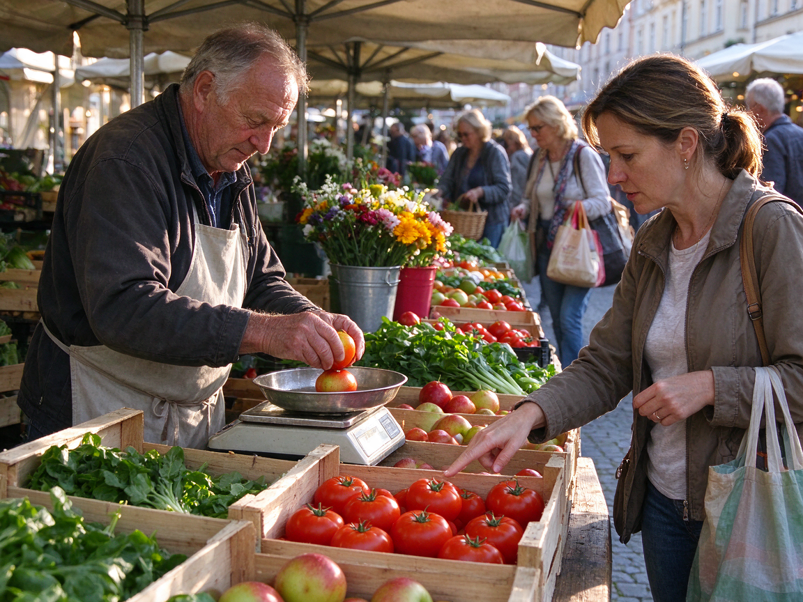
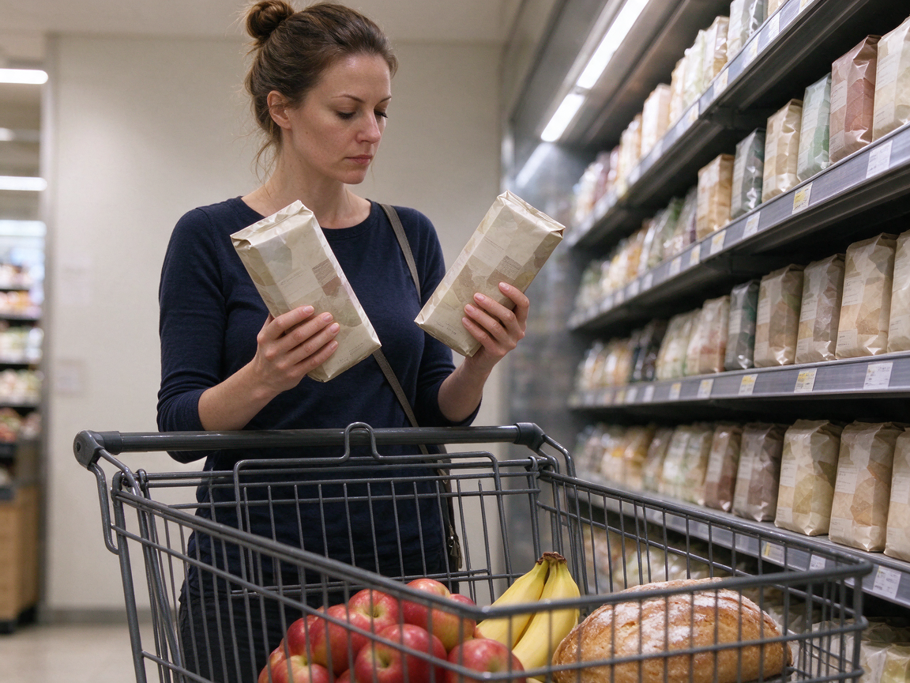

Betreff: Ihre Bestellung
Sehr geehrter Herr Nowak,
Ihr Paket mit den bestellten Lebensmitteln wird morgen zwischen 14 und 18 Uhr geliefert. Bitte beachten Sie: Die Kühlwaren dürfen nicht länger als zwei Stunden draußen stehen. Wenn Sie nicht zu Hause sind, geben wir das Paket bei einem Nachbarn ab oder stellen es in die Packstation.
Mit freundlichen Grüßen
Ihr Lieferservice Frisch
Die Audiodatei fehlt oder kann nicht geladen werden. Sie können „Hören beenden“ klicken und trotzdem die Aufgaben ansehen.
Aufgabe 1 · Ansagen am Telefon oder per LautsprecherSie hören jeden Text einmal. Zu jedem Text gibt es eine Aufgabe.
1
Wo sitzen die Gäste?
2
Wann kann man die Torte abholen?
3
Was soll der Kunde tun?
4
Was sollen die Kunden jetzt tun?
Aufgabe 2 · Ansagen im RadioSie hören jeden Text einmal.
5
Wann bekommt man die Nüsse gratis?
6
Wann beginnt die Sendung?
7
Was gibt es nach zwölf Uhr?
8
Was sollen Kunden mit dem Glas tun?
9
Wie lange kann man Online-Ware zurückschicken?
Aufgabe 3 · GesprächeZu jedem Gespräch lösen Sie zwei Aufgaben.
Gespräch 1 · Im Restaurant.
10
Was können die Gäste tun, bis ein Tisch frei ist?
11
Die Frau hat einen Tisch reserviert.
Gespräch 2 · Im Supermarkt.
12
Wo steht die laktosefreie Milch?
13
Der laktosefreie Joghurt ist diese Woche teurer.
Gespräch 3 · Ein Kunde reklamiert.
14
Was macht die Verkäuferin?
15
Der Kunde hat den Kassenbon vergessen.
Gespräch 4 · Zwei Freunde kochen zusammen.
16
Warum kochen sie ohne Fleisch?
17
Der Mann kauft heute Abend ein.
Aufgabe 4 · Meinungen: Essen: Was sagen die drei Personen über ihre Essgewohnheiten?Sie hören drei Personen.
Essen: Was sagen die drei Personen über ihre Essgewohnheiten?
Ordnen Sie die Aussagen den drei Personen zu. Nicht jede Aussage passt. Sie haben eine Minute Zeit zum Lesen.
- a Diese Person isst aus Überzeugung kein Fleisch.
- b Diese Person kocht nicht gern.
- c Diese Person isst nur im Restaurant.
- d Diese Person kocht gern neue Rezepte.
- e Diese Person isst nie warm.
- f Diese Person frühstückt gern lange.
18
Person 1
19
Person 2
20
Person 3
Lesen
45 Min
25 Aufgaben. Die Zeit läuft erst, wenn Sie starten. Sie können auch zuerst Schreiben wählen (links).
Aufgabe 1 · Kataloge, Verzeichnisse, RubrikenWo finden Sie das? Wählen Sie die richtige Rubrik.
1
Sie möchten Lebensmittel online bestellen. Wo schauen Sie?
2
Sie möchten einen Tisch im Restaurant reservieren. Wo schauen Sie?
3
Sie suchen ein Rezept für Kuchen. Wo schauen Sie?
4
Sie möchten wissen, was im Supermarkt im Angebot ist. Wo schauen Sie?
5
Sie haben Fragen zu gesunder Ernährung. Wo suchen Sie?
Aufgabe 2 · AnzeigenLesen Sie die Anzeigen und ordnen Sie zu.
Welche Anzeige passt zu welcher Situation? Eine Situation hat keine passende Anzeige: Wählen Sie dann x.
a Kochkurs für Anfänger: Lernen Sie einfache, gesunde Gerichte. Freitags 18 Uhr, 25 € pro Abend, Zutaten inklusive.
b Mittagstisch: Jeden Tag ein warmes Gericht für nur 7,50 €. Mo–Fr 11.30–14 Uhr. Gasthaus zur Post.
c Hofladen Müller: frisches Gemüse und Eier direkt vom Bauernhof. Di–Sa 9–17 Uhr.
d Café Mondschein: Livemusik am Samstag, 20 Uhr, Eintritt frei, Tischreservierung empfohlen.
e Vegane Bäckerei neu eröffnet! Brot, Brötchen und Kuchen ohne tierische Produkte. Hauptstraße 22.
f Gesucht: Küchenhilfe in Restaurant, 3 Tage pro Woche. Bewerbung vor Ort, Restaurant Adria.
g Getränkemarkt Süd: Lieferung bis an die Wohnungstür, ab 20 € Bestellwert gratis.
h Wochenmarkt: jeden Mittwoch und Samstag, 7–13 Uhr, Marktplatz. Auch Blumen und Käse.
6
Sie möchten lernen, gesund zu kochen.
7
Sie möchten günstig zu Mittag essen.
8
Sie suchen eine Arbeit in der Küche.
9
Sie möchten Eier direkt vom Bauernhof kaufen.
10
Sie suchen ein Café, in dem man bis Mitternacht tanzen kann.
Aufgabe 3 · Presse und formelle MitteilungenLesen Sie die Texte. Zu jedem Text gibt es zwei Aufgaben.
Text 1
Text 2
Schule und Pausenbrot
Viele Eltern fragen sich: Was soll das Kind in der Schule essen? Ernährungsexperten empfehlen Vollkornbrot mit Gemüse und etwas Obst. Süßigkeiten und Limonade sind keine gute Wahl, weil sie nur kurz satt machen. Viele Schulen verkaufen inzwischen auch gesunde Snacks. Trotzdem ist ein Pausenbrot von zu Hause meistens günstiger.
Viele Eltern fragen sich: Was soll das Kind in der Schule essen? Ernährungsexperten empfehlen Vollkornbrot mit Gemüse und etwas Obst. Süßigkeiten und Limonade sind keine gute Wahl, weil sie nur kurz satt machen. Viele Schulen verkaufen inzwischen auch gesunde Snacks. Trotzdem ist ein Pausenbrot von zu Hause meistens günstiger.
Text 3
Einladung zum Straßenfest
In der Hauptstraße feiern wir am 12. Dezember unser jährliches Straßenfest. Die Geschäfte öffnen bis 22 Uhr. Es gibt Glühwein, Waffeln und Livemusik. Kinder können basteln und Weihnachtslieder singen. Der Eintritt ist frei. Parkplätze sind an diesem Tag gesperrt, bitte benutzen Sie die Parkhäuser am Stadtrand.
In der Hauptstraße feiern wir am 12. Dezember unser jährliches Straßenfest. Die Geschäfte öffnen bis 22 Uhr. Es gibt Glühwein, Waffeln und Livemusik. Kinder können basteln und Weihnachtslieder singen. Der Eintritt ist frei. Parkplätze sind an diesem Tag gesperrt, bitte benutzen Sie die Parkhäuser am Stadtrand.
Zu Text 1
11
Wann wird das Paket geliefert?
12
Wenn Herr Nowak nicht zu Hause ist, wird das Paket zurückgeschickt.
Zu Text 2
13
Was empfehlen die Experten?
14
Das Pausenbrot von zu Hause ist meistens teurer als Essen in der Schule.
Zu Text 3
15
Was gilt an diesem Tag für Autofahrer?
16
Das Straßenfest kostet Eintritt.
Aufgabe 4 · InformationsbroschüreSind die Aussagen richtig oder falsch?
Allgemeine Hinweise zur Rückgabe von Waren
Sie können Waren innerhalb von 30 Tagen zurückgeben, wenn sie nicht benutzt wurden. Bitte bringen Sie den Kassenbon mit. Das Geld bekommen Sie in bar zurück, wenn Sie bar bezahlt haben; sonst erstatten wir den Betrag auf Ihre Karte. Lebensmittel und Hygieneartikel sind von der Rückgabe ausgeschlossen. Bei Defekten gilt eine Garantie von zwei Jahren.
Sie können Waren innerhalb von 30 Tagen zurückgeben, wenn sie nicht benutzt wurden. Bitte bringen Sie den Kassenbon mit. Das Geld bekommen Sie in bar zurück, wenn Sie bar bezahlt haben; sonst erstatten wir den Betrag auf Ihre Karte. Lebensmittel und Hygieneartikel sind von der Rückgabe ausgeschlossen. Bei Defekten gilt eine Garantie von zwei Jahren.
17
Lebensmittel kann man innerhalb von 30 Tagen zurückgeben.
18
Man braucht für die Rückgabe den Kassenbon.
19
Die Garantie bei Defekten gilt zwei Jahre.
Aufgabe 5 · Brief ergänzen (Sprachbausteine)Welches Wort passt? Lösen Sie die Aufgaben 20 bis 25.
Hallo Jonas,
morgen Abend möchte ich dich (20) Abendessen einladen. Ich koche Spaghetti (21) Tomatensoße. Hast du Lust? Wir können auch einen Film ansehen, (22) du möchtest. Kannst du bitte etwas zu trinken (23)? Ich habe leider nichts mehr (24) Hause. Sag mir bitte, (25) du kommst.
Liebe Grüße
Mia
morgen Abend möchte ich dich (20) Abendessen einladen. Ich koche Spaghetti (21) Tomatensoße. Hast du Lust? Wir können auch einen Film ansehen, (22) du möchtest. Kannst du bitte etwas zu trinken (23)? Ich habe leider nichts mehr (24) Hause. Sag mir bitte, (25) du kommst.
Liebe Grüße
Mia
20
Lücke (20)
21
Lücke (21)
22
Lücke (22)
23
Lücke (23)
24
Lücke (24)
25
Lücke (25)
Schreiben
30 Min
Ein Brief, Aufgabe A oder B. Die Zeit läuft erst, wenn Sie starten. Sie können auch zuerst Lesen wählen (links).
Schreiben30 Minuten · ein Brief
Wählen Sie Aufgabe A oder B. Schreiben Sie ca. 80–100 Wörter, behandeln Sie alle vier Punkte, und vergessen Sie Anrede und Gruß nicht.
Ihr Nachbar Herr Berger hat Sie zum Abendessen eingeladen. Sie können nicht kommen. Schreiben Sie ihm eine kurze Nachricht.
Schreiben Sie auf alle vier Punkte:
- Bedanken Sie sich für die Einladung.
- Sagen Sie, dass Sie nicht kommen können, und erklären Sie warum.
- Schlagen Sie einen anderen Termin vor.
- Fragen Sie, ob Sie etwas mitbringen sollen.
Sie möchten mit einer Gruppe von acht Personen in einem Restaurant feiern. Schreiben Sie eine E-Mail an das Restaurant (formell).
Schreiben Sie auf alle vier Punkte:
- Wann möchten Sie kommen und wie viele Personen?
- Wofür ist die Feier?
- Welche Wünsche haben Sie (Essen, Tisch)?
- Wie bekommen Sie die Bestätigung?
0 Wörter
SprechenPaarprüfung · ca. 15 Minuten
Teil 1 · Sich vorstellen
Sie stellen sich vor (ca. 1 Minute). Danach folgen ein bis zwei Fragen.
- Name
- Geburtsort
- Wohnort
- Arbeit / Beruf
- Familie
- Sprachen
Mögliche Nachfragen: Was essen Sie am liebsten? · Kochen Sie gern? · Was ist in Deutschland anders beim Essen?
Teil 2 · Von Erfahrungen berichten
Teilnehmer A · Bild A
'">
'+this.alt+'- Was sehen Sie auf dem Foto?
- Wo kaufen Sie normalerweise ein?
- Was ist der Unterschied zwischen Markt und Supermarkt?
Teilnehmer B · Bild B
'">
'+this.alt+'- Beschreiben Sie das Foto.
- Wo kaufen Sie Lebensmittel ein und warum?
- Kochen Sie lieber selbst oder essen Sie im Restaurant?
Teil 3 · Gemeinsam etwas planen
Sie möchten mit Kollegen ein Sommerfest im Park planen. Besprechen Sie Essen, Getränke und Aufgaben.
- Wann und wo?
- Was gibt es zu essen und zu trinken?
- Wer kauft was?
- Wer bringt Geschirr und Musik mit?
- Was machen Sie bei Regen?
Sprechen Sie laut, am besten mit Aufnahme. Schreiben Sie danach Ihre Antworten hier auf. Die Bewertung machen wir im Claude-Chat.